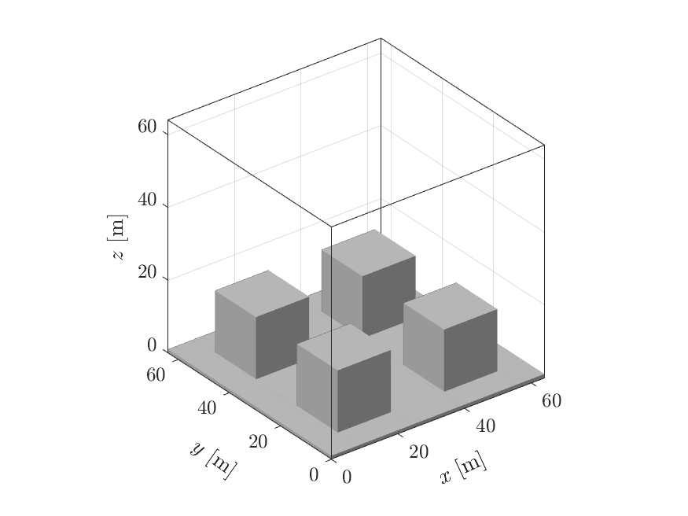
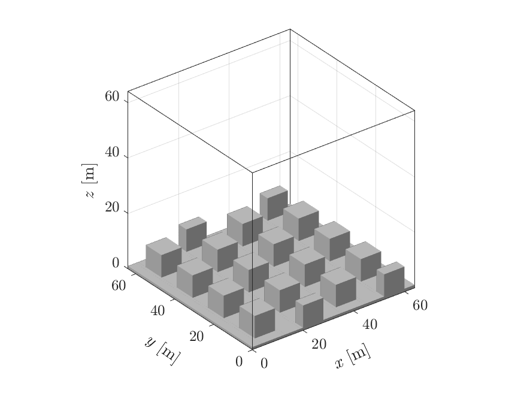
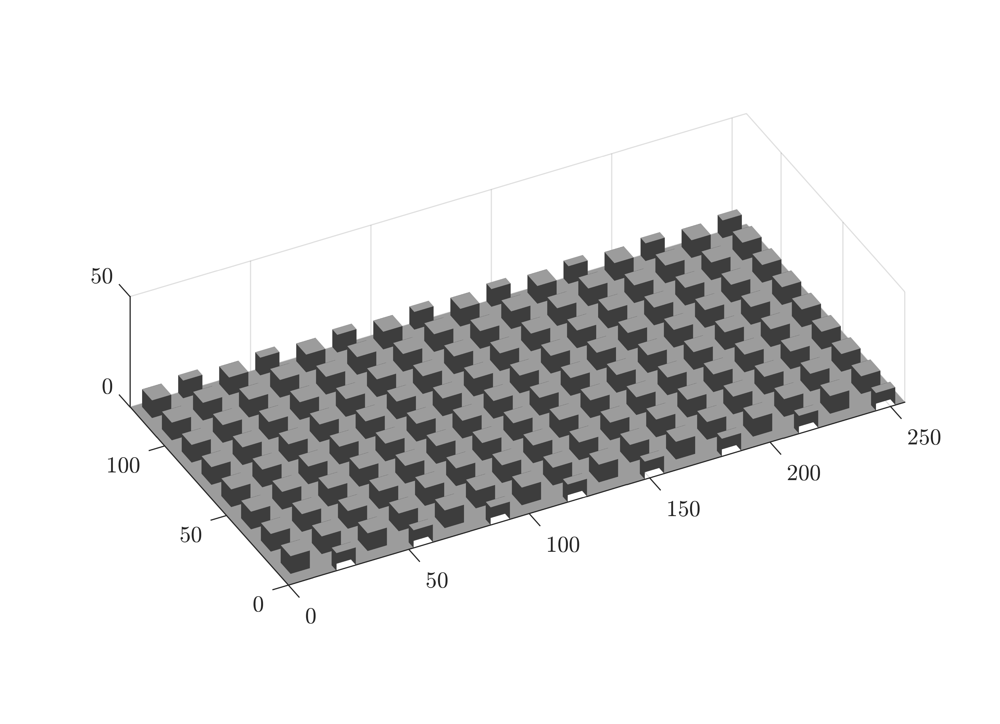

Example simulations¶
uDALES can simulate a large variety of urban case studies. Here we showcase a few examples (List of examples) with different atmospheric stabilities and various setups (overview in Table 1) to help you get started. The setups are in the namoptions file of your simulation. To maximise the benefit of these examples it is advised that you have the namoptions file open for the relevant simulation as you work through the example documentation.
Note that we limited the simulation time to just a few minutes for demonstration, if you are looking to conduct realistic simulations, you need a much longer simulation time. If you wish to run all examples automatically and plot inputs and outputs as shown in this guide, follow the instructions detailed in the development notes instead.
Prerequisites¶
All examples below assume that you have installed uDALES as per our Installation and First Run.
Set up the paths and variables for running the simulation, for example with the following:
# We assume you are running the following commands from your
# top-level project directory.
export DA_TOOLSDIR=$(pwd)/u-dales/tools # Directory of scripts
export DA_BUILD=$(pwd)/u-dales/build/release/u-dales # Build file
export NCPU=2 # Number of CPUs to use for a simulation
export DA_WORKDIR=$(pwd)/outputs # Output top-level directory
Run¶
Example cases are located under u-dales/examples.
All examples are run using the following command:
# We assume you are running the following commands from your
# top-level project directory.
# General syntax: local_execute.sh exp_directory
./u-dales/tools/local_execute.sh examples/001
Customising simulations¶
If you want to make any changes to the example simulations, e.g. changing the domain size, follow the set-up steps in the "Installation and First Run" guide to obtain a copy of the simulation setup and make the changes to your copy of the setup. You may need to run some pre-processing steps (see Pre-processing) before running the simulation. These cases are indicated as such in Table 1.
Main simulation set-up options¶
Below is a list of common setups and options for urban case studies. A complete list of all options available with uDALES can be found in the Configuration document.
Table 1: Main setups of urban case studies and reference example simulation(s).
| Type | Setting | Requires pre-processing | Example simulation |
|---|---|---|---|
| Domain | size and resolution | yes | all |
| Domain | warmstart | no | 102 |
| Morphology | no buildings | yes | 001 |
| Morphology | infinite canyon builings | yes | 101 |
| Morphology | aligned cuboid buildings | yes | 002, 949 |
| Morphology | staggered cuboid buildings | yes | 102 |
| Morphology | pre-defined buildings | yes | 201, 950 |
| Forcing | pressure gradient | yes | 001 |
| Forcing | volume flow rate | no | 101, 102, 949 |
| Forcing | Coriolis and nudging | yes | 201 |
| Forcing | driving data | no | 950 |
| Lateral momentum boundary conditions (BCs) | periodic | no | 001, 002, 101, 102, 201, 949 |
| Lateral momentum BCs | driving data | no | 950 |
| Passive scalar source | point source | no | 102 |
| Passive scalar source | line source | no | 101 |
| Lateral scalar BCs | periodic | no | 101, 949 |
| Lateral scalar BCs | inflow-outflow | no | 102 |
| Surface and top scalar BCs | constant flux | no | 102 |
| Surface and top scalar BCs | isothermal | no | 101, 949 |
| Surface and top scalar BCs | energy balance | yes | 201 |
| Output | instantaneous fields | no | 001, 101, 102, 201, 949 |
| Output | time-averaged fields | no | 201, 950 |
| Output | space-averaged (along x,y) profiles | no | 002, 101, 102, 201, 501, 950 |
List of examples¶
- Standard simulation setup
- Neutral simulations
- 001
- 002
- Non-neutral simulations
- 101
- 201
- Driver simulation
- 949
- 950
Standard simulation setup¶
The below setups are required for any type of simulation.
The experiment number, run time and number of pencils in x and y (the product of which is the number of cores to be used):
&RUN
iexpnr = 001
runtime = 11.
nprocx = 2
nprocy = 2
The simulation domain varies amongst the example simulations. An example is given:
&DOMAIN
imax = 64
jtot = 64
ktot = 64
xsize = 64
ysize = 64
&INPS
zsize = 64
We also set an initial profile for u-wind velocity (and other variables if they are used) of e.g. u = 2 m/s by
&INPS
u0 = 2.
and add some random perturbations to the initial field, such that turbulence develops faster:
randu = 0.01
Changes in the domain and initial profiles require pre-processing.
Further, we recommend running the simulations with adaptive time-stepping, the Fast-Fourier-Transformation algorithm in the poisson solver (this will become default in the future) and using the Vreman sub-grid model:
&RUN
ladaptive = .true.
&DYNAMICS
ipoiss = 0
&NAMSUBGRID
lvreman = .true.
Further information on these parameters is in the Namoptions overview, and more on the required pre-processing steps is found in Pre-processing.
Neutral simulations¶
001¶
No buildings, bottom surface roughness¶
This simulation does not contain any buildings. Therefore we need to set:
&WALLS
nfcts = 0
lbottom = .true.
A rough surface at the bottom is simulated by setting the following parameters:
&BC
thls = 288.
z0 = 0.01
z0h = 0.000067
where z0 is the roughness length for momentum. Note that even though this is a neutral simulation, all of these parameters need to be specified to reasonable values.
The simulation uses periodic lateral boundary conditions by default.
Constant pressure gradient¶
A constant pressure gradient in x is set by
&INPS
dpdx = 0.0001
Output: instantaneous fields¶
The simulation output contains the 3D instantaneous fields of u, v, and w. The output is produced after every 10 seconds of simulation runtime. We specify this by setting:
&OUTPUT
lfielddump = .true.
fieldvars = 'u0,v0,w0'
tfielddump = 10.
002¶

This simulation has a similar setup to 001 and additionally contains buildings.
Aligned cuboid buildings¶
The simulation contains aligned cube-shaped buildings.
The IBM must be turned on if buildings are included:
&RUN
libm = .true.
The corresponding number of facets, solid points (for the U, V, W and scalar grids), fluid boundary points and facet sections are automatically updated in WALLS by the preprocessing routine:
&WALLS
nfcts = 1024
nsolpts_u = 17408
nsolpts_v = 17408
nsolpts_w = 20480
nsolpts_c = 16384
nbndpts_u = 8576
nbndpts_v = 8576
nbndpts_w = 8448
nbndpts_c = 8448
nfctsecs_u = 10815
nfctsecs_v = 10811
nfctsecs_w = 7168
nfctsecs_c = 10720
Output: space-time averaged profiles¶
The simulation output contains 1D space-averaged and space-time-averaged vertical profiles. The output is produced after every 10 seconds of simulation runtime and the time-average uses a sample time step of 1 second. We specify this by setting:
&OUTPUT
lxytdump = .true.
tstatsdump = 10.
tsample = 1.
Non-neutral simulations¶
101¶

Infinite canyon buildings¶
This simulation has "infinite canyons" along the y-axis as buildings.
Volume flow rate forcing in x¶
The simulation is driven by a fixed volume-flow rate forcing, which prescribes the domain-average velocity of u = 1.5 m/s:
&PHYSICS
luvolflowr = .true.
uflowrate = 1.5
Temperature¶
The simulation also considers changes in temperature. We therefore need to set
&PHYSICS
lbuoyancy = .true.
ltempeq = .true.
set an initial temperature profile (using the surface temperature thl0 and the default lapse rate)
&INPS
thl0 = 290.
and specify the advection scheme for temperature:
&DYNAMICS
iadv_thl = 2
Isothermal BC for temperature¶
The temperature on the facets is set by the values in Tfacinit.f90 (295 K in this case). These temperatures do not change as the energy balance is not used as a default (lEB = .false.). A fixed temperature at the the top of the domain (thl_top) is set by
&BC
thl_top = 295.
BCtopT = 2
The temperature flux between the building walls and surrounding air is determined by wall functions:
&WALLS
iwalltemp = 2
Passive scalars line source¶
A passive scalar line source is set by
&SCALARS
nsv = 1
lscasrcl = .true.
nscasrcl = 1
the exact properties of the line are set as follows:
&INPS
xSb = 32
ySb = 0
zSb = 1
xSe = 32
ySe = 64
zSe = 1
SSl = 1
sigSl = 0.5
The scalar advection scheme is also set:
&DYNAMICS
iadv_sv = 7
Output: instantaneous fields for temperature and scalars¶
We added the temperature and scalar concentration to the instantaneous fields:
&OUTPUT
fieldvars = 'u0,v0,w0,th,s1'
102¶
| Domain | 3D output |
|---|---|
|  |  |
The basic setup of this simulation is similar to 101.
Prerequisites for warmstart simulation¶
The simulation is continued from a previous simulation with a similar setup. The restart files (initd and inits for scalars) containing all relevant field data are saved in the example directory.
Warmstart¶
A warmstart simulation requires setting
&RUN
lwarmstart = .true.
startfile = 'initd00000267_xxx_xxx.102'
where the name of the startfile needs to match the name of the restart files (xxx instead of processor number).
For a warmstart containing scalar concentration fields you need to additionally set
Volume flow rate forcing in x¶
The simulation is driven by a fixed volume-flow rate forcing:
&PHYSICS
luvolflowr = .true.
uflowrate = 1.5
Constant thermal flux BC for temperature¶
The temperature is determined by a constant thermal flux from the roads, building roofs and the top of the domain (iwalltemp = 1 by default):
&BC
wtsurf = 0.01
wttop = -0.01
bctfz = 0.01
Passive scalars point source¶
The simulation contains a scalar field with a scalar point source. The nature of the source is given by:
&SCALARS
nsv = 1
lscasrc = .true.
nscasrc = 1
lreadscal = .true.
Here lreadscal is necessary as we are running a warmstart.
The position, strength and standard deviation of emission of the source are set by:
&INP
xS = 4
yS = 8
zS = 3
SSp = 1
sigSp = 0.5
Scalar inflow-outflow BC¶
The scalar concentration is not determined by periodic boundary conditions like momentum and temperature, but leaves the domain at the outflow plane:
&BC
BCxs = 2
The inlet profile is determined by the profile found in scalar.inp.102 (defaults to 0. if unspecified)
Energy balance simulation¶
201¶

Pre-defined buildings¶
The buildings are read in by the preprocessing from a user provided STL file.
Output: time averaged fields¶
We add 3D output fields that are averaged in time:
&OUTPUT
ltdump = .true.
Energy Balance¶
The simulations solves the surface energy balance.
&ENERGYBALANCE
lEB = .true.
lconstW = .true.
lwriteEBfiles = .true.
dtEB = 2.
bldT = 301.0
wsoil = 314.0
wgrmax = 451.0
wwilt = 172.0
wfc = 314.0
skyLW = 395.0
GRLAI = 2.1
rsmin = 200.0
nfaclyrs = 5
For that we also need to use wall functions for temperature and moisture at the building facets:
&WALLS
iwalltemp = 2
iwallmoist = 2
Moisture¶
The energybalance contains a latent heat flux and therefore we need to solve the full wet thermodynamics including moisture:
&PHYSICS
lmoist = .true.
The advection scheme for moisture is specified by:
&DYNAMICS
iadv_qt = 2
and domain top- values are chosen:
&BC
qt_top = 0.0
Coriolis forcing and nudging¶
A coriolis force is specified:
&PHYSICS
lcoriol = .true.
The geostrophic velocity is defined by default as a uniform profile of the initial velocity:
&INPS
u0 = 1.5
Nudging is applied in the top 64 cells of the domain with a relaxation timescale of 10800 seconds:
&PHYSICS
lnudge = .true.
tnudge = 10800.
nnudge = 64
Driver simulation¶
949¶

This simulation is similar to 101 but does not contain any scalars. It is used as the precursor simulation for simulation 949.
Driver/precursor simulation¶
To save the output of a simulation into files that can be read by another simulation as driver-inputs, we set:
&DRIVER
idriver = 1
tdriverstart = 100.
dtdriver = 1.
driverstore = 101
iplane = 256
iplane sets the index of the y-z plane we store (here this is equal to the outlet plane), and (driverstore-1)*dtdriver determines for how long you can run the driven simulation. The time when we start recording the planes should therefore be tdriverstart <= runtime - (driverstore-1)*dtdriver. More information on these parameters is in the documentation on simulation setup.
950¶
Prerequisites simulation with external forcing¶
The driver input files are included in the driver_files folder inside the 950 example folder.
Driven simulation¶
This simulation is forced by the data from the stored outlet plane of simulation 949:
&DRIVER
idriver = 2
driverjobnr = 949
driverstore = 101
The runtime of this simulation is restricted by the simulation time of the driver output, which is (driverstore-1)*dtdriver of the precursor simulation 949. The maximum runtime we can set is therefore
runtime = 100.
dtmax = 1.
and we want to set dtmax = dtdriver (501) to avoid interpolation of the driver snapshots.
All boundary conditions (momentum, temperature) are set to inflow-outflow by:
&BC
BCxm = 3
BCtopm = 3